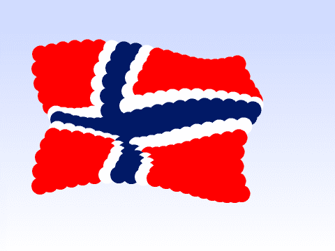
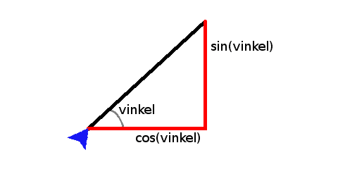
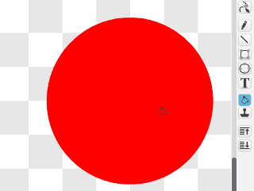
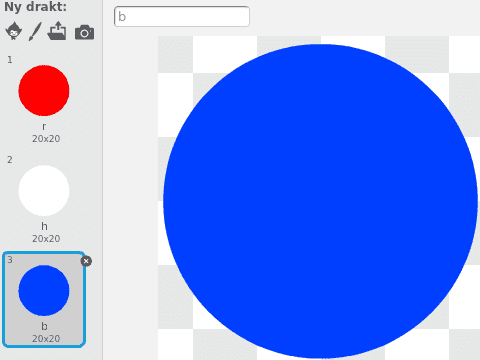

I denne oppgaven vil vi se litt nærmere på hvordan vi kan lage spennende mønstre
og animasjoner ved hjelp av litt matematikk. Spesielt skal vi tegne et flagg som
ser ut som om det vaier i vinden.

Steg 1: Gå i sirkel
Vi har tidligere sett flere måter vi kan få figurer til å gå i sirkel på. For
eksempel flyttet vi i Soloball figuren vekk fra
sentrum og brukte pek mot [musepeker v] for å flytte figuren i sirkel.
I denne oppgaven skal vi bruke to funksjoner, sinus og cosinus, for å ta
litt mer kontroll over hvordan sirkelbevegelsen skjer. Du har kanskje ikke hørt
om sinus og cosinus? Disse er tall som forteller hvor lange sidene i en
rettvinklet trekant er i forhold til hverandre. I figuren nedenfor forteller for
eksempel cosinus, cos(vinkel) oss hvor lang den vannrette streken er i
forhold til den skrå streken.

La oss se hvordan vi kan bruke dette til å tegne sirkler!
Sjekkliste
når grønt flagg klikkes
begrens rotasjon [ikke roter v]
for alltid
sett x til ((100) * ([cos v] av (retning)))
sett y til ((100) * ([sin v] av (retning)))
vend venstre (5) grader
slutt
Test prosjektet
Klikk på det grønne flagget.
Tallet 100 forteller hvor stor sirkelen skal være (det er lengden av den
skrå streken i figuren over). Prøv å endre på tallet (begge steder) for å se
hva som skjer.
Retning på sirkelbevegelsen
Du legger kanskje merke til at katten flytter seg i motsatt retning av hvordan
pilen i vend venstre (5) grader klossen peker? Dette er fordi Scratch
måler vinkler i motsatt retning av hva som er vanlig i matematikken (og som vi
har tegnet over).
Steg 2: Flytt sirkelen
Så langt har vi bare tegnet en sirkel midt på skjermen. La oss se om vi kan flytte den!
Sjekkliste
når grønt flagg klikkes
begrens rotasjon [ikke roter v]
sett [sentrumX v] til [-100]
sett [sentrumY v] til [50]
for alltid
sett x til ((sentrumX) + ((100) * ([cos v] av (retning)))
sett y til ((sentrumY) + ((100) * ([sin v] av (retning)))
vend venstre (5) grader
slutt
Test prosjektet
Klikk på det grønne flagget.
Prøv selv
Du trenger en sett [radius v] til []-kloss i tillegg til å bruke
(radius) to steder i koden din.
Steg 3: Dansende disker
Nå skal vi prøve å få mange figurer til å gå i sirkel samtidig.
Sjekkliste

når grønt flagg klikkes
gjenta (99) ganger
sett [sentrumX v] til (tilfeldig tall fra (-150) til (150))
sett [sentrumY v] til (tilfeldig tall fra (-100) til (100))
sett [radius v] til [50]
lag klon av [meg v]
slutt
når jeg starter som klon
for alltid
sett x til ((sentrumX) + ((radius) * ([cos v] av (retning)))
sett y til ((sentrumY) + ((radius) * ([sin v] av (retning)))
vend venstre (5) grader
slutt
Kaoset kommer faktisk av at Scratch bruker litt tid på å starte hver klon. Vi
kan lage en mindre kaotisk dans på denne måten:
Bytt når jeg starter som klon med når jeg mottar [dans v], og legg
til en send melding [dans v]-kloss etter gjenta (99) ganger-løkken.
Om du kjører programmet ditt igjen vil du se at alle diskene danser i takt.
Hva liker du best?
Steg 4: Flagrende flagg
Vi skal nå se hvordan vi kan gjøre om denne kaotiske dansen til noe som ligner
på et flagrende flagg.
Sjekkliste
når grønt flagg klikkes
vis
sett [radius v] til [25]
sett [sentrumX v] til [-160]
gjenta (19) ganger
sett [sentrumY v] til [-100]
gjenta (14) ganger
lag klon av [meg v]
endre [sentrumY v] med (16)
slutt
endre [sentrumX v] med (16)
slutt
send melding [flagre v]
skjul
når jeg mottar [flagre v]
for alltid
sett x til ((sentrumX) + ((radius) * ([cos v] av (retning)))
sett y til ((sentrumY) + ((radius) * ([sin v] av (retning)))
vend venstre (5) grader
slutt
Legg til klossen vend høyre (1) grader etter lag klon av [meg v]-klossen, og prøv programmet ditt igjen. Hva har skjedd?
Steg 5: Det norske flagget
Nå skal vi se hvordan vi kan tegne flagget i forskjellige farger.
Sjekkliste

når grønt flagg klikkes
sett [flagg v] til [rrrrrhbbhrrrrr]
Bokstavene rrrrrhbbhrrrrr beskriver at vi først vil ha 5 røde disker,
deretter 1 hvit, 2 blå, 1 hvit og 5 røde disker.
Bytt (bokstav (nummer) i (flagg)) med (bokstav ((nummer) mod (lengden av (flagg))) i (flagg)) i bytt drakt til [ v]-klossen. Om du prøver
programmet igjen vil du se at flaggmønsteret gjentas (sett for eksempel
(flagg) til rhb for å se dette).
Prøv selv
Forbedre denne siden
Funnet en feil? Kunne noe vært bedre? Hvis ja, vennligst gi oss tilbakemelding ved å lage en sak på Github eller fiks feilen selv om du kan. Vi er takknemlige for enhver tilbakemelding!